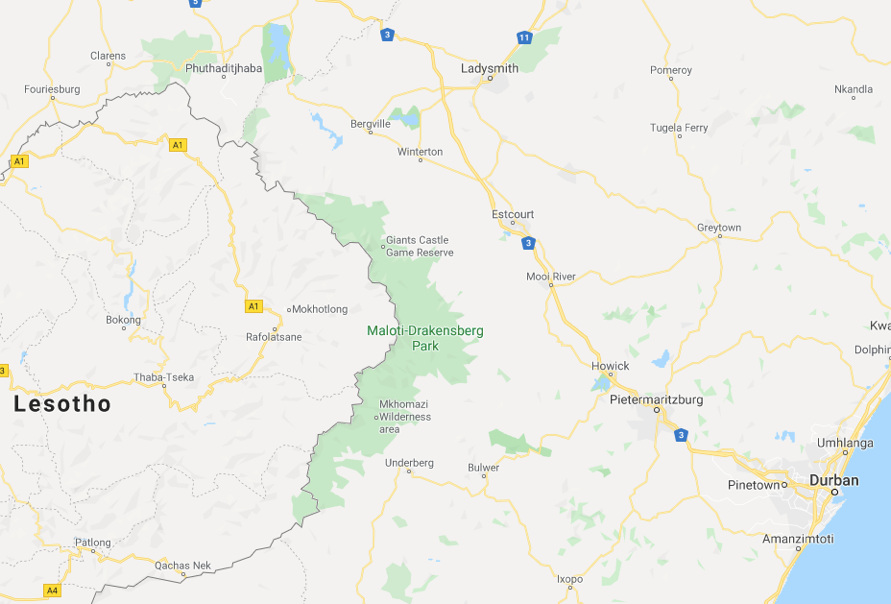
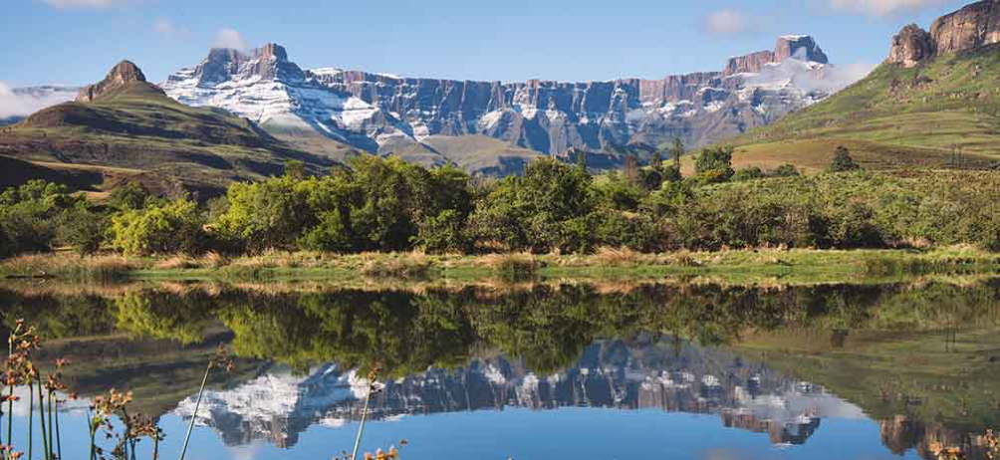

En Janvier, nous prenons quelques jours de vacances dans le Drakensberg. Il s’agit d’une chaîne de montagnes dont le nord se situe à 4h de route au Sud-Est de Johannesburg, à côté du Lesotho.

Sur cette carte, il est intéressant de voir que les villes ont des noms d’origine anglaise (Durban, Greytown, LadySmith), hollandaise (Bergville, Pietermaritzburg, Howick) ou zulu/xhosa (Amazimtoti, Nkandla).
Drakensberg signifie « montagne du Dragon » en afrikaans. Le nom xhosa est différent, uKhahlamba signifie « barrière de lances ». C’est une région où de nombreux conflits ont opposé les populations locales aux colons et certaines montagnes ressemblent à des remparts infranchissables. On y trouve des falaises vertigineuses et des cascades parmi les plus hautes du monde.
Le nord du Drakensberg est le paradis des randonneurs débutants. Le centre et le sud, plus sauvages, s’adressent aux randonneurs / escaladeurs expérimentés.

Non loin de là, de nombreux champs de bataille de la guerre anglo-boers peuvent se visiter. Nous nous contentons du musée du siège (siège de la ville) de Ladysmith. Quand la seconde guerre anglo-boer débute (1899), les boers étaient en nette supériorité numérique. Ils en profitent pour envahir certains des territoires contrôlés par les britanniques. Ils assiègent plusieurs villes dont celle de Ladysmith. Les anglais furent assiégés pendant 4 mois par les boers (parmi eux, Louis Botha qui deviendra le Premier ministre de l’Afrique du Sud réunifiée en 1910). L’arrivée de renforts venant du Royaume Uni et d’autres colonies britanniques permit de mettre fin au siège, les anglais étant désormais en large supériorité numérique.
Fin janvier, une amie de passage en Afrique du Sud pour le boulot nous rend visite un week-end. Nous en profitons pour faire une visite d’Alexandra, qui n’est pas une personne, mais un township de Johannesburg. Contrairement à Soweto, Alexandra est d’une superficie modeste. Et c'est un township situé à quelques mètres du quartier de Sandton, qui concentre le plus de richesse de tout le continent africain. Le contraste est écœurant.
Un dimanche matin, avec nos 2 guides, nous faisons le tour du township à vélo, entrons dans les églises pour assister à une messe retransmise sur écran géant, buvons de la bière artisanale faite par les grand-mères du quartier, rencontrons des entrepreneurs, un barman, etc… Alexandra est un des quartiers les plus dangereux d’Afrique du Sud. Mais cette visite nous a permis d’entrer dans ce monde par des figures incontournables du quartier. C’était passionnant, très loin de tous les clichés, énergique, joyeux...
Retour en arrière. Fin décembre, au cours d’un café avec le patron d’un fonds d’investissement ici, on me parle pour la première fois d’un programme éducatif qui accompagne les jeunes d’Alexandra.
Le programme, fondé par la RATP il y a plus de 10 ans (lors de la construction du Gautrain), vise à favoriser la réussite scolaire des jeunes d’Alexandra. 300 jeunes sont sélectionnés sur dossier dans les 5 principales écoles d’Alexandra et reçoivent des cours supplémentaires dans la prestigieuse enceinte de « Saint-Mary School », une école fondée en 1888. Orientation, soutien scolaire, prise de parole en public, découverte de l’entreprise, méthodologie de travail, … ces sessions hebdomadaires sont un véritable plus pour ces élèves.
Parmi ces 300 élèves, les 40 meilleurs ont la possibilité d’obtenir un mentor. Mon dossier a été retenu pour faire partie des mentors de cette année. Le dossier de candidature était interminable, mais visait surtout à tester notre motivation à mon avis. Je ne suis pas certain que la sélection soit très difficile.
Un samedi matin, nous recevons 2h de formation (j’avais déjà été mentor dans un programme en France donc rien de très nouveau). Je découvre quand même que le public ne va pas être le même qu’en France. Parmi les 40 jeunes mentees (majoritairement des filles, qui ont des meilleurs résultats scolaires), on nous explique que certains n'ont jamais quitté leur quartier, parlé à un « Blanc » ou mis les pieds dans une salle de cinéma.
Notre rôle, c’est d’accompagner (pendant 1, 2, 3 ans) notre mentee, de l’aider dans ses méthodes de travail, de lui faire découvrir de nouveaux horizons, une nouvelle culture, rencontrer des gens inspirants, échanger sur son orientation….
Lors de la formation, on nous explique qu’il est souvent plus simple d’être le mentor de 2 ou 3 personnes que d’une seule. Les activités de groupe sont plus sympas et le contact facilité. Lors des 2h qui suivent, nous rencontrons les 40 élèves autour d’un pique-nique.
Finalement, j’accepte d’être le mentor de 3 élèves.
Meet my 3 young mentees from Alexandra (Johannesburg): Molebogeng, Nthabiseng & Kaemogetswe ! 😊🇿🇦🇫🇷 @SizananiMentor #Education pic.twitter.com/BIINBnVqns
— Grégoire Potton (@GregoirePotton) March 6, 2020
Molebogeng (les prénoms sud-africains ont un sens, le sien signifie « en remerciement ») a 14 ans et veut devenir avocate. Nthabiseng (« me rend heureux ») a 15 ans et hésite encore entre études de médecine et de psychologie. Kaemogetswe (« qui est le bienvenu ») a 15 ans et rêve de devenir chirurgien.
Je les vois le samedi après-midi, une fois toutes les 2 semaines pour des activités diverses (randonnée, musée, discussions dans un café, ciné, aide aux devoirs…). Il y a 2 semaines, nous avons visité Constitution Hill avec la cellule de Mandela, de Gandhi et la visite de la Cour constitutionnelle. Et je leur ai appris à jouer aux échecs.
En décembre et janvier ce sont les vacances d’été ici, Johannesburg est très calme. J’ai eu néanmoins des rendez-vous et rencontres qui déclenchent d’autres rendez-vous et d’autres rencontres, qui débouchent parfois sur des opportunités professionnelles intéressantes.
En décembre, je rencontre Yves, ancien patron d’Areva ici, qui préside la Chambre de Commerce franco-sud-africaine. Il propose de m’aider dans ma recherche d’emploi. Il me dit aussi que la chambre européenne de commerce et d’industrie (Chambre UE) recherche un directeur général.
Mon CV circule parmi les membres du board de la chambre UE. Lors d’un entretien avec son Président et le représentant de la délégation européenne, on m’explique l’historique chargé de cette chambre qui dysfonctionne depuis sa création (en 2015, après des tentatives infructueuses en 1996 et 2003) et la mission difficile de la relancer en repartant de zéro, sans consensus politique, sans budget, avec des équipes restreintes. Bref, une mission marrante. L’ambassadeur français, Aurélien, me dit en blaguant qu’il y a 2 jobs impossibles ici : patron d’Eskom et patron de la Chambre européenne de commerce…
J’accepte la mission pour 3 mois. Et si ça me plait, et que ça fonctionne, je continuerai.
Un diagnostic de grande qualité a été fait par un consultant pendant une période de 6 mois début 2019. Reste à trouver un consensus politique entre les chambres bilatérales des Etats membres de l’Union, les grandes entreprises, les ambassades, la délégation de l’Union européenne. Tout cela pour déboucher sur un mémorandum d’accord et des nouveaux statuts à faire adopter à la chambre existante et à chaque chambre bilatérale. Pour être franc, c’est un peu de la haute voltige diplomatique et je ne suis pas certain que cela fonctionnera car les obstacles sont nombreux. Mais malgré les divergences de fond (sur le modèle de la chambre, sur les membres, sur son rôle…), ma première impression est que les blocages résident davantage dans des luttes d’égos. Bref, ça ne va pas être simple.
Grace au travail de Selen, je me rends compte de la richesse de la vie culturelle à Johannesburg.
Nous sommes retournés à l’auditorium de l’université de Wits pour le concert du nouvel an, qui a lieu fin janvier ici car il n’y a personne à Johannesburg au nouvel an. Nous y sommes également retournés pour écouter le pianiste français Maxime Zecchini (visiblement un spécialiste du répertoire pour main gauche), avec qui j’ai eu la chance de déjeuner le lendemain du concert avec Selen.
Lors d'un concert, nous rencontrons une personnalité hors du commun : Carolyn Steyn est actrice, productrice, présidente d’association, animatrice radio réputée, elle est également l’épouse d’une des grandes fortunes d’Afrique du Sud. Son mari a créé une ville du futur, à partir de rien : Steyn City. Carolyn nous invite à voir la première de Rocky Horror Picture Show dans un lieu surréaliste (Montecasino), grand centre culturel, sorte de réplique d’une ville italienne de la Renaissance.
Quelques semaines plus tard, nous sommes conviés à l’anniversaire de « 67 Blankets for Mandela », dont Carolyn Steyn est fondatrice et présidente. C’est une association qui récolte des dons pour acheter des bobines de laines, qui s’appuie sur des milliers de bénévoles qui font du crochet et fabriquent des couvertures. Ces couvertures sont ensuite distribuées aux populations les plus pauvres. La cérémonie est vraiment très différente de ce qu’on peut voir en France. Un humoriste fait le show, le public est invité à chanter, à apprendre des chorégraphies, à danser. Tout est moins guindé.
Dans le cadre d’un festival soutenu par l’Institut français, nous avons aussi assisté à la projection de 3 courts-métrages français de Jean Renoir, Tati et Truffaut, dans le quartier très animé de Maboneng.
Mi-février, nouveau séjour au Cap pour quelques jours. À cette période de l’année, le Cap accueille deux évènements d'envergure : le discours annuel du Président au Parlement (State of the Nation Adress) et la « Art Fair ». Selen y est pour le travail car tous les artistes, musées et galeristes s’y retrouvent. En raison de la session parlementaire et des nombreux invités de marque, la ville est totalement bloquée. Bon prétexte pour en sortir et faire de la randonnée.
J'assiste aussi à la projection du film « L’Etat contre Mandela et les autres », coproduit par Julie Gayet qui restitue le procès de Rivonia en dessin animé noir et blanc à partir des archives sonores du procès. Excellent documentaire, je vous invite à regarder la bande annonce.
Pour finir sur une note légère (avant la partie historique), voici un aperçu de la musique sud-africaine avec des morceaux très différents. Je me contente de 3 artiste / 4 chansons.
Cette chanson est appelée "Click Song" car les blancs n'arrivent pas à prononcer les sons (qu'on appelle les "clicks") des langues xhosa et zulu.
J'ignore pourquoi, je n'arrive pas à intégrer la vidéo sur le site (ainsi que la suivante), mais elle vaut le coup donc je vous invite vraiment à aller l'écouter, elle est très courte et Miriam Makeba y parle en français.
Je n’ai pas ralenti mes lectures, mais je lis moins de livres sur l’Afrique du Sud en ce moment. Donc un seul à ajouter à la bibliothèque.
C’est mon 3e livre de Brink (après “A Dry White Season” et “An Instant in the Wind”). Celui-ci est beaucoup plus léger, plus poétique. Le narrateur est Etienne Barbier, un soldat d’origine française qui raconte ses aventures en Afrique du Sud (alors sous la coupe de la Compagnie néerlandaise des Indes orientales).
Suite et fin de ce résumé à ma sauce de l’histoire de l’Afrique du Sud.
Frederik De Klerk remporte les élections de 1989 sur un programme réformiste. L’ANC fait alors savoir qu’elle est prête à négocier et pose de nombreuses conditions préliminaires : libération de tous les prisonniers politiques, levée de l’état d’urgence, suspension de l’usage de la peine de mort, légalisation des partis interdits. Dans un discours au Parlement, le 2 février 1990, De Klerk accède à toutes ces exigences et, quelques jours plus tard, Mandela est libéré. C’est la fête dans tout le pays. Mais le chemin est encore long.
Mandela reprend en main l’ANC afin de le transformer en parti de gouvernement. Il s’entoure de 3 jeunes : Thabo Mbeki (conseil du Président de l’ANC Tambo pendant son exil) ; Cyril Ramaphosa (secrétaire du syndicat des mineurs) ; Chris Hani (ancien chef de la branche armée de l’ANC, secrétaire général du Parti communiste).
Des négociations multiraciales pour élaborer une nouvelle Constitution sont ouvertes. Les dernières lois d'apartheid sont abolies en juin 1991 : réintégration des bantoustans, fusion de l'hymne sud-africain Die Stem avec le chant de libération Nkosi Sikelel' iAfrika, adoption d'un nouveau drapeau national…. Tout cela se fait en collaboration étroite avec Mandela.
Ces négociations sont complexes. Pour maintenir sa domination, le gouvernement avait fait des concessions à certains groupes politiques dans certaines régions. Ces derniers ont beaucoup à perdre avec la fin de l’apartheid. Les violences et les massacres se multiplient, notamment entre l’Inkatha et l’ANC. Mandela, convaincu qu’ils sont encouragés en sous-mains par les Afrikaners, dénonce une « troisième force qui tente délibérément d’empêcher des négociations » entre l’ANC et le gouvernement. Il accuse publiquement De Klerk de double jeu.
Lire la suite dans l'onglet Histoire
A bientôt...